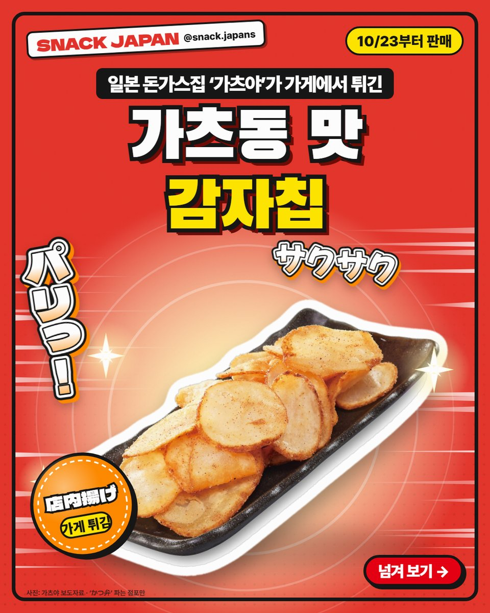
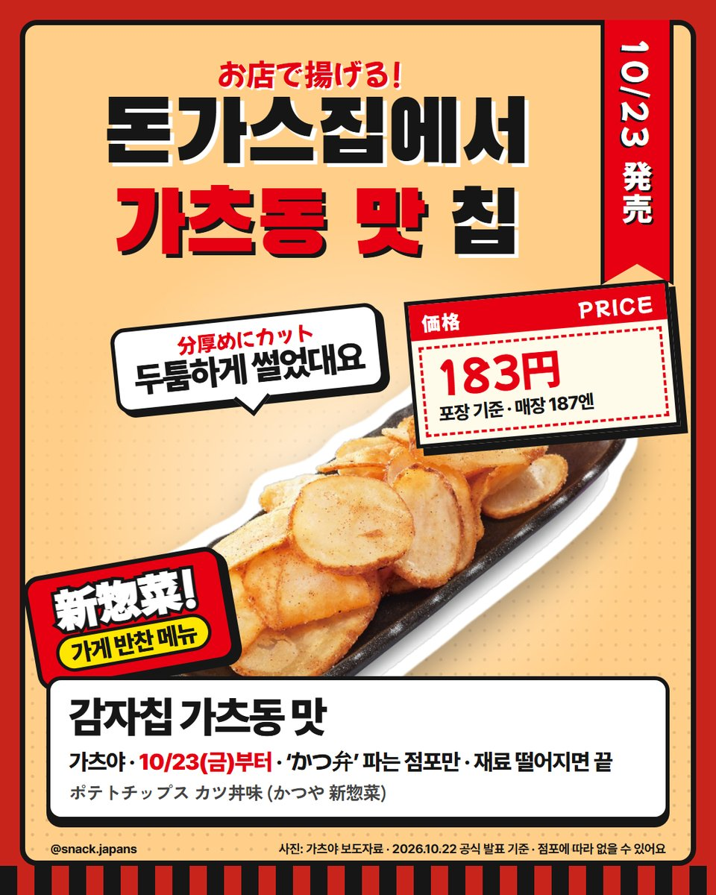
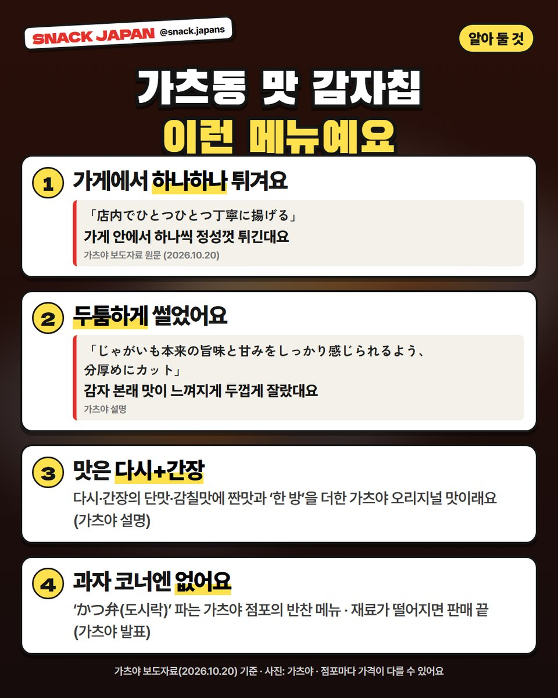
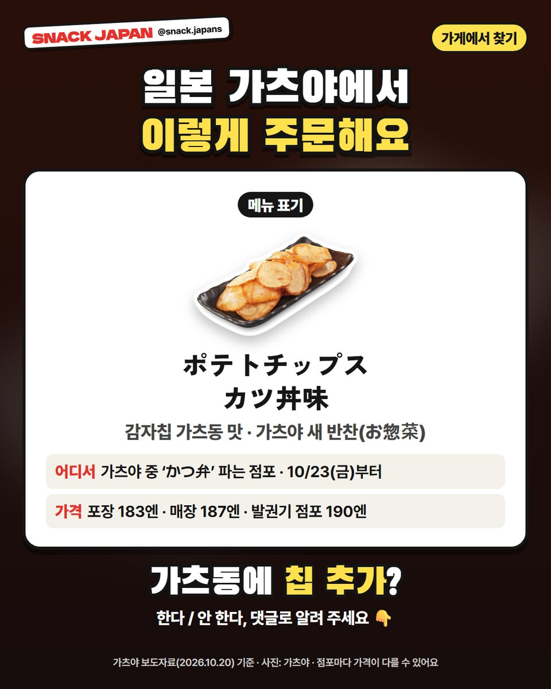

일본 가츠야 가츠동 맛 감자칩 출시, 돈가스집이 가게에서 직접 튀긴다
10/23부터 'かつ弁' 파는 가츠야 점포에서! 두툼하게 썬 감자를 가게에서 튀긴 가츠동 맛 반찬 메뉴예요.
일본 돈가스집에서
감자칩을 튀겨 판다고요? 🥔
돈가스 체인 '가츠야'가
'가츠동 맛 감자칩'을 새 반찬 메뉴로 내놨어요.
과자 봉지가 아니라 가게에서 튀겨 주는 메뉴예요!
가츠야 보도자료 기준으로 정리해 볼게요.

1. 10/23부터, 'かつ弁' 파는 가츠야에서!
- 파는 곳: 일본 가츠야 중 'かつ弁(도시락)'을 파는 점포만
- 출시: 10/23(금)부터, 재료가 떨어지면 판매 끝
- 포장도, 가게에서 먹는 것도 돼요
- 메뉴 이름: ポテトチップス カツ丼味
- 가격: 사진 카드에 정리해 뒀어요 (포장·매장·발권기 점포마다 달라요)

2. 두툼하게 썰어서 가게에서 튀긴대요
가츠야 설명으로는
감자 본래 맛이 느껴지게 두껍게 썰고,
가게 안에서 하나하나 튀긴대요.

3. 맛은 다시·간장 바탕
다시와 간장의 단맛·감칠맛에
짠맛과 '한 방'을 더한 가츠야 오리지널 맛이래요 (가츠야 설명).
같이 나온 새 반찬은 이모모치 꼬치·두툼 햄가츠 등이에요.

4. 주문하는 법
- 메뉴 이름: ポテトチップス カツ丼味
- 'かつ弁' 파는 가츠야 점포인지 먼저 확인
- 점포마다 가격이 다를 수 있어요
총평
- 기준: 가츠야(아크랜드서비스HD) 보도자료(10/20), 10월 22일 확인
- 참고: 직접 먹어 보지 않아서 회사 설명만 옮겼어요
- 추천: 일본 여행에서 가츠동 먹을 계획인 분, 특이한 감자칩 찾는 분
가츠동 시킬 때 이 칩도 추가할래요?
댓글로 알려 주세요 🥔